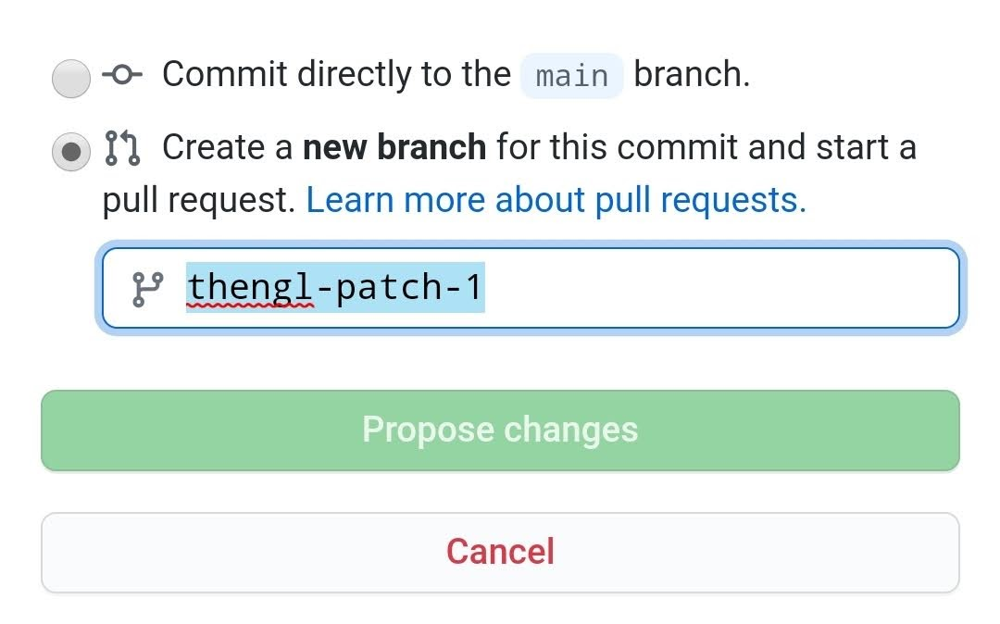

1 New to markdown
You are reading the work-in-progress of the SoilSpec4GG manual. This chapter is currently draft version, a peer-review publication is pending. You can find the polished first edition at https://soilspectroscopy.github.io/ossl-manual/.
1.1 Clone, add reference, submit merge request…
To add a new dataset, please follow these steps:
- Click on the edit button on the book homepage,
- Login to Github.com and select “Start a pull-request”,
- Add new references to
020-dataset_list.Rmdand save,
- Commit and push and make a pull
request.
- Once received we will check it and if you have followed the instructions closely,
the reference will appear in the document as soon as the code is merged with the master,

Figure 1.1: Example of a pull request on Github.com.
If you’re new to markdown and want to learn how to use it, please refer to this tutorial.
If you are new to R and/or pedometrics, please consider reading / studying:
- Kabacoff, R.I., (2011). R in Action: Data Analysis and Graphics with R. Manning publications, ISBN: 9781935182399, 472 pages.
- California Soil Resource Lab, (2017). Open Source Software Tools for Soil Scientists, UC Davis.,
- Grolemund, G., (2014). Hands-On Programming with R. O’Reilly, https://github.com/rstudio-education/hopr
- Hengl, T., MacMillan, R.A., (2019). Predictive Soil Mapping with R. OpenGeoHub foundation, Wageningen, the Netherlands, 370 pages, https://soilmapper.org, ISBN: 978-0-359-30635-0.
-
RStudio,
- Wadoux, A.M.J.-C., Malone, B., McBratney, A.B., Fajardo, M., Minasny, B., (2021). Soil Spectral Inference with R: Analysing Digital Soil Spectra Using the R Programming Environment. Progress in Soil Science, Springer Nature, ISBN: 9783030648961, 274 pp.
If you’d like more of a roadmap to guide you through R, have a look at Oscar’s blogpost: